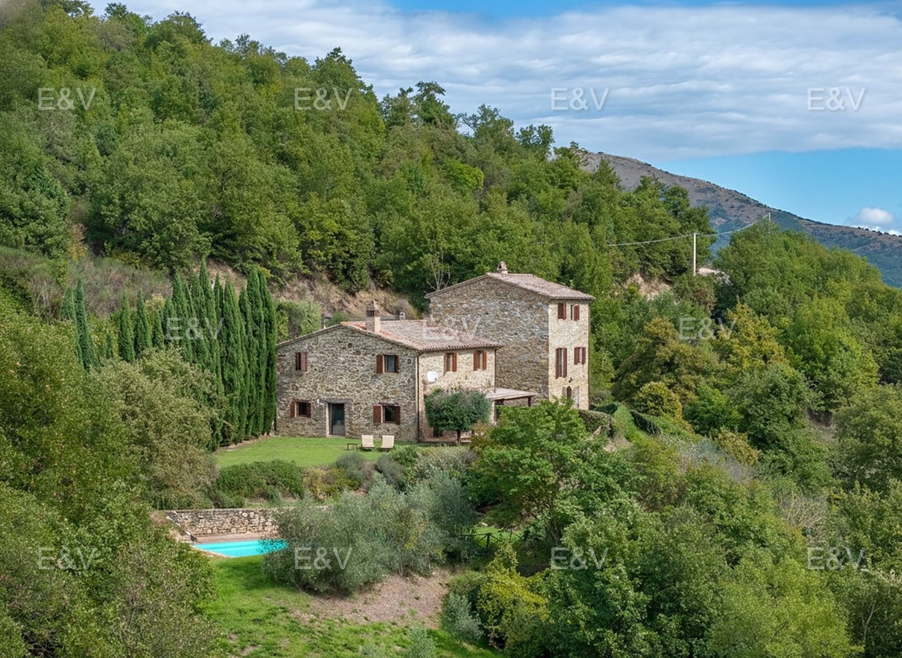
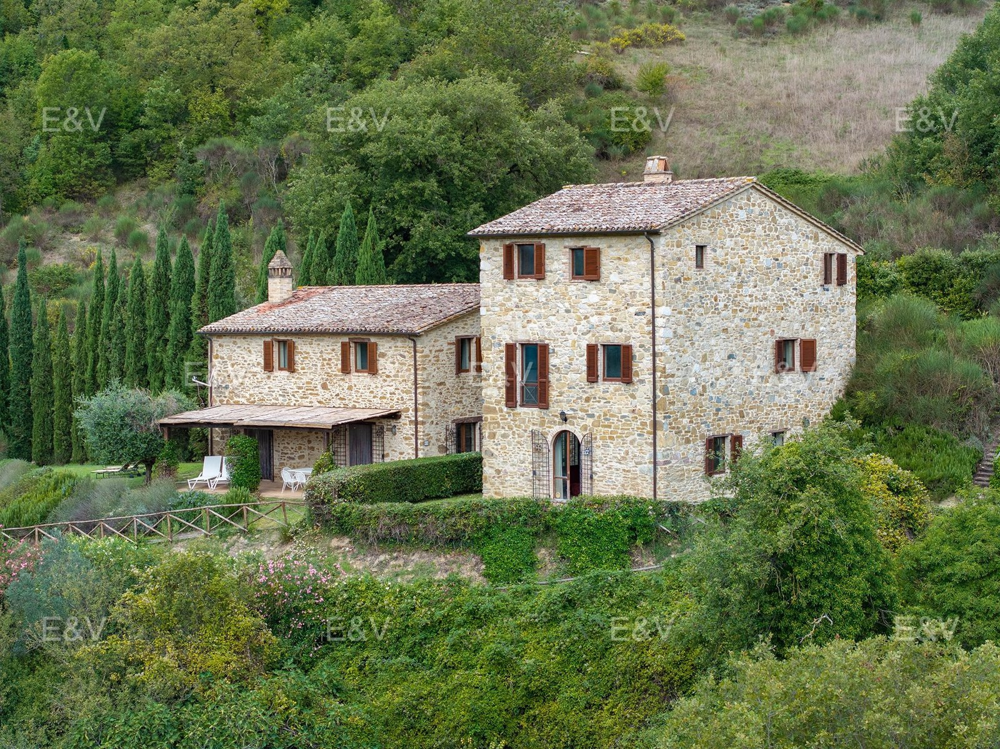
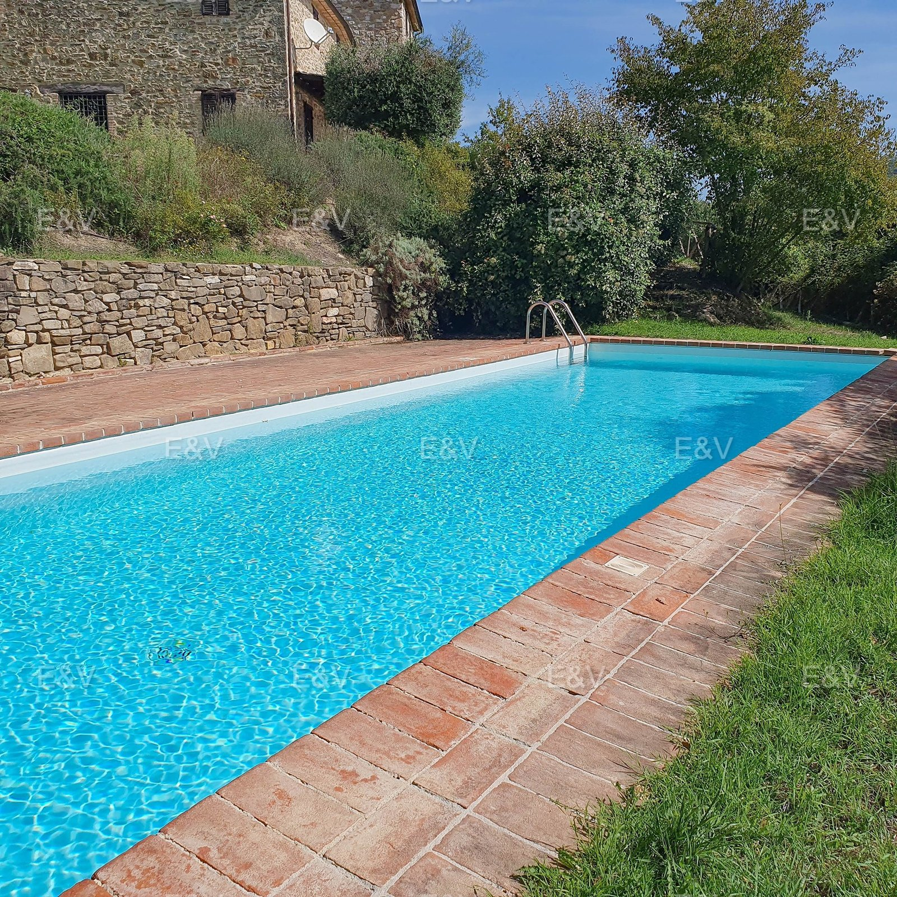
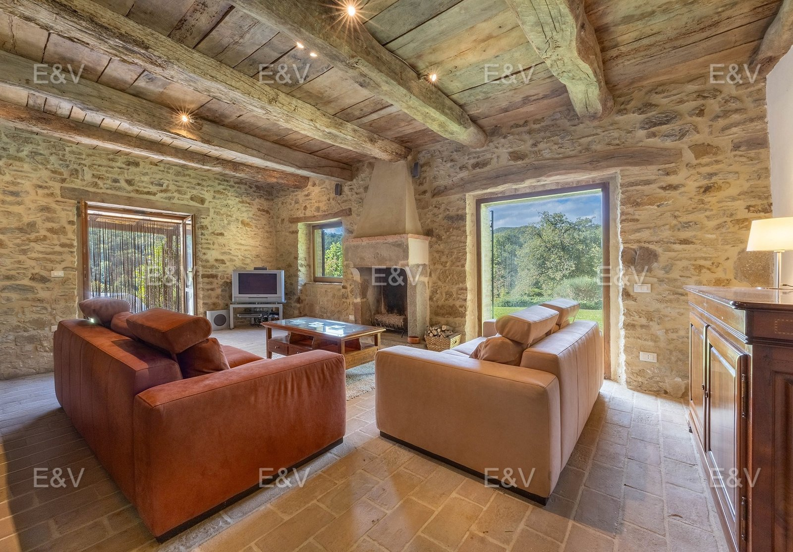
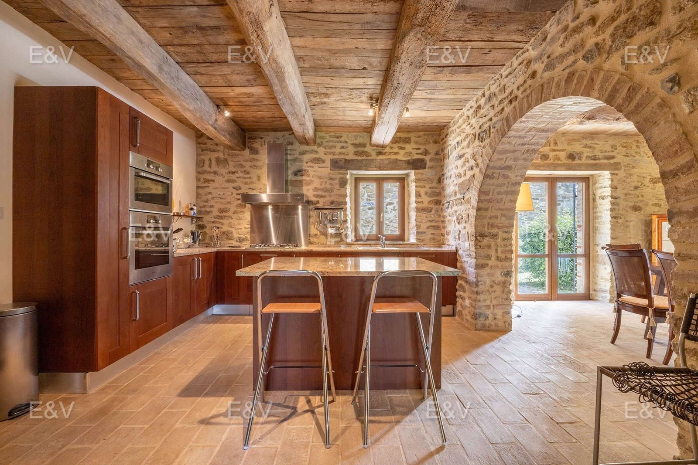
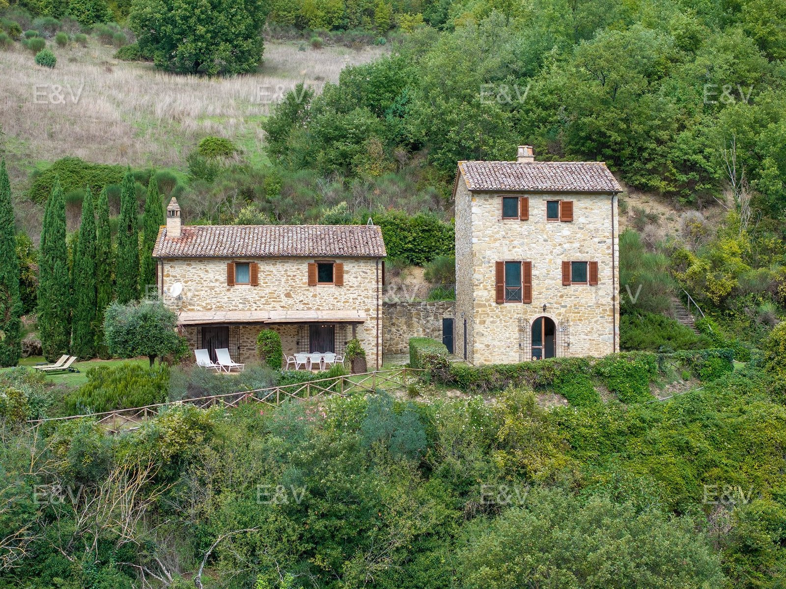
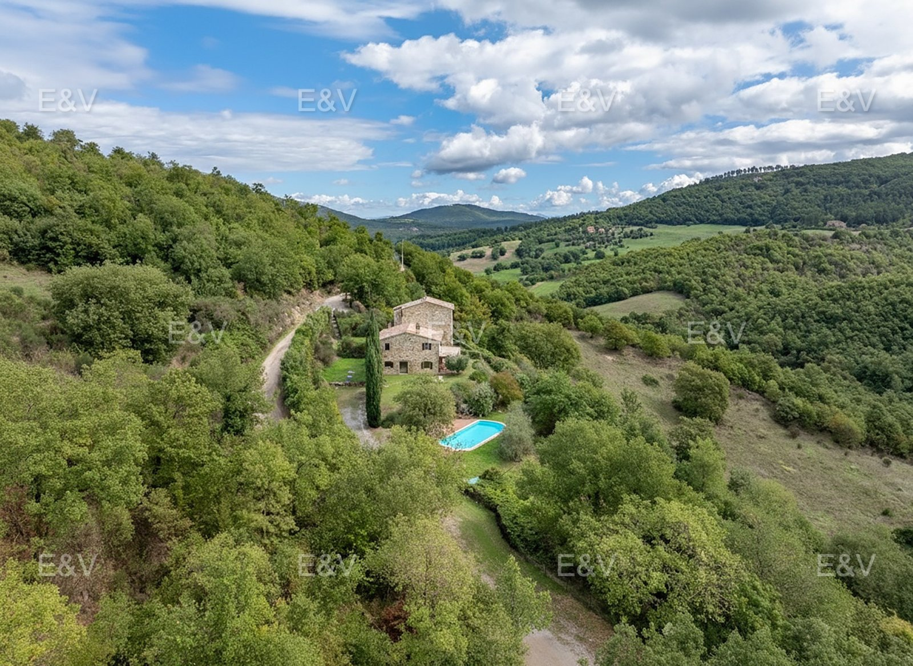

€750.000
Between San Giovanni del Pantano and Preggio, Magione · Hills above Lago Trasimeno, Umbria
Restored stone farmhouse with beams, cotto, and stone arches; cypress drive; 12×4 private pool with solarium. Main casale ~170 m² (3 beds) plus a 3-storey stone dependance split into 50 m² + 100 m² apartments. Furnished and ready to live or let.
Opened 28 Aug 2026. Schema Offer €750000. Irrigation on terraced garden. Hiking country toward Monte Tezio; Antognolla golf ~25 min. No outbound agency button — Instagram blocks those hops.





